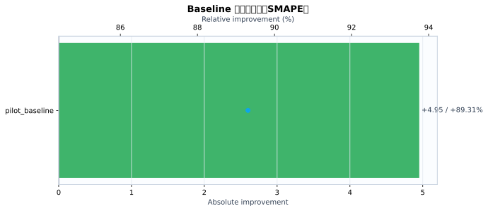
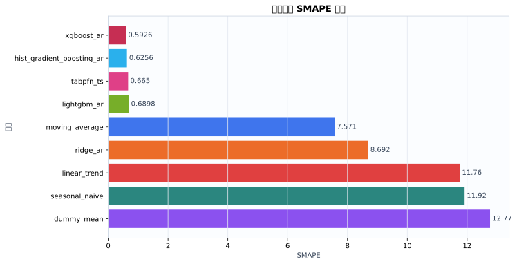
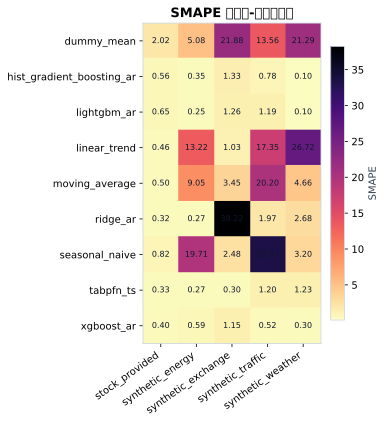
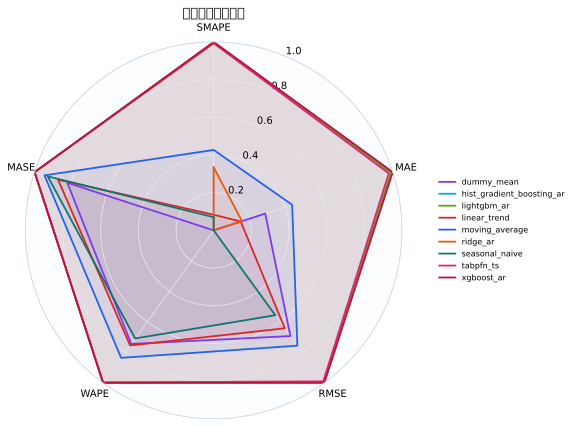
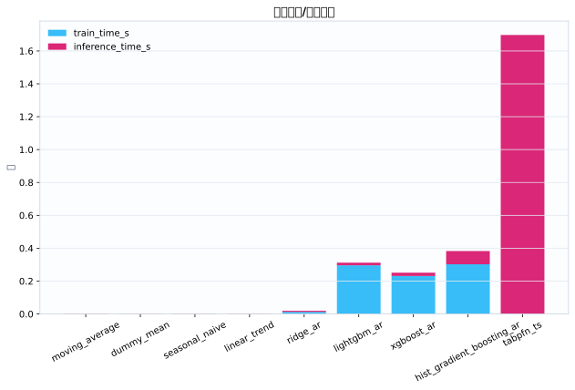
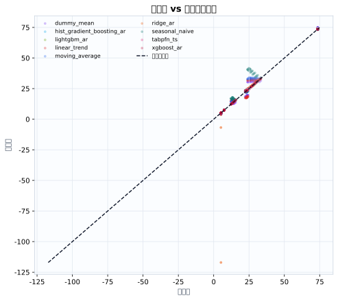
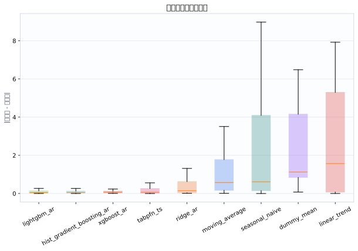

数据集5
模型9
指标行数45
预测行数1080
结论摘要
- 主指标 SMAPE 下，当前 run 的最佳模型是 xgboost_ar，平均值为 0.5926。
- 相对 baseline pilot_baseline，当前最佳模型在 SMAPE 上提升 89.31% （absolute=+4.952）。
核心指标卡片
SMAPE
0.5926
最佳模型: xgboost_ar
GPU_MEMORY_MB
0
最佳模型: dummy_mean
INFERENCE_TIME_S
0.002649
最佳模型: moving_average
MAE
0.09024
最佳模型: xgboost_ar
MASE
0.3918
最佳模型: lightgbm_ar
MSE
0.01603
最佳模型: xgboost_ar
RMSE
0.119
最佳模型: xgboost_ar
TRAIN_TIME_S
0
最佳模型: tabpfn_ts
Baseline 对比
| baseline | metric | current_model | current_value | baseline_model | baseline_value | absolute_difference | relative_improvement_pct |
|---|---|---|---|---|---|---|---|
| pilot_baseline | smape | xgboost_ar | 0.5926 | ridge_ar | 5.545 | 4.952 | 89.31 |
动态交互图表
指标排名动态图
残差直方图
效率-精度散点图
数据集排名轨迹
Matplotlib 可视化图表
Baseline 改变量图
{kind=link}

Baseline/模型平均指标柱状图
{kind=link}

数据集-模型热力图
{kind=link}

多指标雷达图
{kind=link}

运行时间图
{kind=link}

真实值-预测值散点图
{kind=link}

残差箱线图
{kind=link}

训练过程曲线
N/A：当前 run 目录未发现 loss/accuracy/TensorBoard/wandb 训练曲线文件。
错误分析与样本分析
当前支持预测任务的残差与真实-预测散点分析；分类 confusion matrix / ROC / PR 曲线需要真实分类输出后自动启用。
原始 Metrics
| run_id | model | dataset | domain | horizon | context_length | mse | mae | rmse | smape | wape | mase | train_time_s | inference_time_s | gpu_memory_mb |
|---|---|---|---|---|---|---|---|---|---|---|---|---|---|---|
| tabpfn_ts_20260528_113019 | dummy_mean | synthetic_energy | energy | 12 | 192 | 0.8033 | 0.6925 | 0.8963 | 5.084 | 5.097 | 1.578 | 0.000436 | 0.00279 | 0 |
| tabpfn_ts_20260528_113019 | seasonal_naive | synthetic_energy | energy | 12 | 192 | 11.04 | 2.965 | 3.322 | 19.71 | 21.82 | 6.756 | 0.0002961 | 0.002375 | 0 |
| tabpfn_ts_20260528_113019 | moving_average | synthetic_energy | energy | 12 | 192 | 2.088 | 1.264 | 1.445 | 9.052 | 9.303 | 2.881 | 0.0002792 | 0.00242 | 0 |
| tabpfn_ts_20260528_113019 | linear_trend | synthetic_energy | energy | 12 | 192 | 4.227 | 1.898 | 2.056 | 13.22 | 13.97 | 4.325 | 0.0002834 | 0.002762 | 0 |
| tabpfn_ts_20260528_113019 | ridge_ar | synthetic_energy | energy | 12 | 192 | 0.002652 | 0.0375 | 0.0515 | 0.2716 | 0.276 | 0.08546 | 0.01211 | 0.006324 | 0 |
| tabpfn_ts_20260528_113019 | hist_gradient_boosting_ar | synthetic_energy | energy | 12 | 192 | 0.003796 | 0.04892 | 0.06161 | 0.3506 | 0.36 | 0.1115 | 0.3696 | 0.09224 | 0 |
| tabpfn_ts_20260528_113019 | lightgbm_ar | synthetic_energy | energy | 12 | 192 | 0.001593 | 0.03421 | 0.03991 | 0.2532 | 0.2518 | 0.07796 | 0.3417 | 0.01757 | 0 |
| tabpfn_ts_20260528_113019 | xgboost_ar | synthetic_energy | energy | 12 | 192 | 0.009161 | 0.08031 | 0.09571 | 0.5919 | 0.5911 | 0.183 | 0.3519 | 0.0192 | 0 |
| tabpfn_ts_20260528_113019 | tabpfn_ts | synthetic_energy | energy | 12 | 192 | 0.002197 | 0.03623 | 0.04688 | 0.2654 | 0.2666 | 0.08256 | 0 | 2.269 | 0 |
| tabpfn_ts_20260528_113019 | dummy_mean | synthetic_traffic | traffic | 12 | 192 | 19.21 | 3.852 | 4.383 | 13.56 | 14.09 | 2.779 | 0.0004508 | 0.002452 | 0 |
| tabpfn_ts_20260528_113019 | seasonal_naive | synthetic_traffic | traffic | 12 | 192 | 145.5 | 10.93 | 12.06 | 33.37 | 40 | 7.887 | 0.0004298 | 0.002449 | 0 |
| tabpfn_ts_20260528_113019 | moving_average | synthetic_traffic | traffic | 12 | 192 | 42.87 | 6.005 | 6.548 | 20.2 | 21.97 | 4.332 | 0.0002871 | 0.002502 | 0 |
| tabpfn_ts_20260528_113019 | linear_trend | synthetic_traffic | traffic | 12 | 192 | 31.46 | 5.06 | 5.609 | 17.35 | 18.51 | 3.65 | 0.0002812 | 0.002739 | 0 |
| tabpfn_ts_20260528_113019 | ridge_ar | synthetic_traffic | traffic | 12 | 192 | 0.3199 | 0.5276 | 0.5656 | 1.972 | 1.93 | 0.3806 | 0.01194 | 0.00635 | 0 |
| tabpfn_ts_20260528_113019 | hist_gradient_boosting_ar | synthetic_traffic | traffic | 12 | 192 | 0.06653 | 0.2148 | 0.2579 | 0.7831 | 0.7859 | 0.1549 | 0.2782 | 0.07577 | 0 |
| tabpfn_ts_20260528_113019 | lightgbm_ar | synthetic_traffic | traffic | 12 | 192 | 0.1645 | 0.3269 | 0.4056 | 1.192 | 1.196 | 0.2358 | 0.2808 | 0.01512 | 0 |
| tabpfn_ts_20260528_113019 | xgboost_ar | synthetic_traffic | traffic | 12 | 192 | 0.03379 | 0.1369 | 0.1838 | 0.5158 | 0.5007 | 0.09873 | 0.2088 | 0.02286 | 0 |
| tabpfn_ts_20260528_113019 | tabpfn_ts | synthetic_traffic | traffic | 12 | 192 | 0.1155 | 0.3176 | 0.3398 | 1.197 | 1.162 | 0.2291 | 0 | 1.821 | 0 |
| tabpfn_ts_20260528_113019 | dummy_mean | synthetic_weather | weather | 12 | 192 | 20.7 | 4.531 | 4.55 | 21.29 | 19.25 | 22.14 | 0.0004766 | 0.003203 | 0 |
| tabpfn_ts_20260528_113019 | seasonal_naive | synthetic_weather | weather | 12 | 192 | 0.7422 | 0.7493 | 0.8615 | 3.199 | 3.183 | 3.66 | 0.0003818 | 0.003439 | 0 |
| tabpfn_ts_20260528_113019 | moving_average | synthetic_weather | weather | 12 | 192 | 1.325 | 1.076 | 1.151 | 4.664 | 4.57 | 5.256 | 0.0003672 | 0.003298 | 0 |
| tabpfn_ts_20260528_113019 | linear_trend | synthetic_weather | weather | 12 | 192 | 30.92 | 5.548 | 5.561 | 26.72 | 23.57 | 27.11 | 0.0003682 | 0.003562 | 0 |
| tabpfn_ts_20260528_113019 | ridge_ar | synthetic_weather | weather | 12 | 192 | 0.5608 | 0.6352 | 0.7488 | 2.678 | 2.698 | 3.103 | 0.01621 | 0.008694 | 0 |
| tabpfn_ts_20260528_113019 | hist_gradient_boosting_ar | synthetic_weather | weather | 12 | 192 | 0.0009902 | 0.02477 | 0.03147 | 0.105 | 0.1052 | 0.121 | 0.2917 | 0.08217 | 0 |
| tabpfn_ts_20260528_113019 | lightgbm_ar | synthetic_weather | weather | 12 | 192 | 0.0006984 | 0.02341 | 0.02643 | 0.09943 | 0.09946 | 0.1144 | 0.2958 | 0.01799 | 0 |
| tabpfn_ts_20260528_113019 | xgboost_ar | synthetic_weather | weather | 12 | 192 | 0.007179 | 0.06964 | 0.08473 | 0.3001 | 0.2959 | 0.3402 | 0.1937 | 0.02015 | 0 |
| tabpfn_ts_20260528_113019 | tabpfn_ts | synthetic_weather | weather | 12 | 192 | 0.1491 | 0.2881 | 0.3861 | 1.23 | 1.224 | 1.408 | 0 | 1.375 | 0 |
| tabpfn_ts_20260528_113019 | dummy_mean | synthetic_exchange | economics | 12 | 192 | 1.033 | 1.015 | 1.016 | 21.88 | 19.72 | 23.17 | 0.0003874 | 0.002422 | 0 |
| tabpfn_ts_20260528_113019 | seasonal_naive | synthetic_exchange | economics | 12 | 192 | 0.02396 | 0.1259 | 0.1548 | 2.48 | 2.447 | 2.874 | 0.0003075 | 0.002595 | 0 |
| tabpfn_ts_20260528_113019 | moving_average | synthetic_exchange | economics | 12 | 192 | 0.03386 | 0.1748 | 0.184 | 3.45 | 3.397 | 3.991 | 0.0002873 | 0.002544 | 0 |
| tabpfn_ts_20260528_113019 | linear_trend | synthetic_exchange | economics | 12 | 192 | 0.0034 | 0.0532 | 0.05831 | 1.034 | 1.034 | 1.215 | 0.0003043 | 0.002715 | 0 |
| tabpfn_ts_20260528_113019 | ridge_ar | synthetic_exchange | economics | 12 | 192 | 1257 | 11.4 | 35.45 | 38.22 | 221.6 | 260.3 | 0.0117 | 0.006464 | 0 |
| tabpfn_ts_20260528_113019 | hist_gradient_boosting_ar | synthetic_exchange | economics | 12 | 192 | 0.006701 | 0.06823 | 0.08186 | 1.329 | 1.326 | 1.558 | 0.2885 | 0.07614 | 0 |
| tabpfn_ts_20260528_113019 | lightgbm_ar | synthetic_exchange | economics | 12 | 192 | 0.005927 | 0.06466 | 0.07698 | 1.259 | 1.257 | 1.476 | 0.284 | 0.01467 | 0 |
| tabpfn_ts_20260528_113019 | xgboost_ar | synthetic_exchange | economics | 12 | 192 | 0.005559 | 0.05931 | 0.07456 | 1.154 | 1.153 | 1.354 | 0.1984 | 0.01625 | 0 |
| tabpfn_ts_20260528_113019 | tabpfn_ts | synthetic_exchange | economics | 12 | 192 | 0.0003669 | 0.01559 | 0.01916 | 0.3022 | 0.3029 | 0.3559 | 0 | 1.354 | 0 |
| tabpfn_ts_20260528_113019 | dummy_mean | stock_provided | finance | 12 | 192 | 0.8027 | 0.7135 | 0.8959 | 2.019 | 1.762 | 0.2432 | 0.0004091 | 0.002592 | 0 |
| tabpfn_ts_20260528_113019 | seasonal_naive | stock_provided | finance | 12 | 192 | 0.09722 | 0.2158 | 0.3118 | 0.8207 | 0.533 | 0.07355 | 0.0003015 | 0.002627 | 0 |
| tabpfn_ts_20260528_113019 | moving_average | stock_provided | finance | 12 | 192 | 0.01478 | 0.09729 | 0.1216 | 0.495 | 0.2403 | 0.03316 | 0.0002796 | 0.00248 | 0 |
| tabpfn_ts_20260528_113019 | linear_trend | stock_provided | finance | 12 | 192 | 0.09794 | 0.2296 | 0.3129 | 0.4623 | 0.567 | 0.07824 | 0.0003018 | 0.002678 | 0 |
| tabpfn_ts_20260528_113019 | ridge_ar | stock_provided | finance | 12 | 192 | 0.01503 | 0.09033 | 0.1226 | 0.3206 | 0.2231 | 0.03078 | 0.01173 | 0.006322 | 0 |
| tabpfn_ts_20260528_113019 | hist_gradient_boosting_ar | stock_provided | finance | 12 | 192 | 0.05927 | 0.1842 | 0.2435 | 0.5598 | 0.4548 | 0.06276 | 0.2838 | 0.07586 | 0 |
| tabpfn_ts_20260528_113019 | lightgbm_ar | stock_provided | finance | 12 | 192 | 0.05127 | 0.1608 | 0.2264 | 0.6455 | 0.3971 | 0.0548 | 0.2778 | 0.01489 | 0 |
| tabpfn_ts_20260528_113019 | xgboost_ar | stock_provided | finance | 12 | 192 | 0.02444 | 0.1051 | 0.1563 | 0.4011 | 0.2595 | 0.03581 | 0.2028 | 0.02134 | 0 |
| tabpfn_ts_20260528_113019 | tabpfn_ts | stock_provided | finance | 12 | 192 | 0.02627 | 0.1186 | 0.1621 | 0.3307 | 0.2929 | 0.04042 | 0 | 1.667 | 0 |
配置参数
展开/折叠配置
{
"/home/wanyi/zy_test/tabpfn-ts-benchmark/configs/config.yaml": {
"defaults": [
{
"dataset": "etth1"
},
{
"model": "seasonal_naive"
},
{
"experiment": "e1_zeroshot"
},
"_self_"
],
"seed": 42,
"output_dir": "results",
"wandb": {
"project": "tabpfn-quant",
"mode": "offline",
"entity": null
},
"hydra": {
"run": {
"dir": "outputs/${now:%Y-%m-%d}/${now:%H-%M-%S}"
}
}
}
}运行环境
{
"python": "3.10.12",
"platform": "Linux-6.8.0-111-generic-x86_64-with-glibc2.35",
"git_head": "N/A",
"git_dirty": false
}Warnings
- 无
产物链接
- metrics.json
- summary.csv
- 源 run 目录: /home/wanyi/zy_test/tabpfn-ts-benchmark/results/full_benchmark_v1_c192_h12_s2
- 主指标: smape